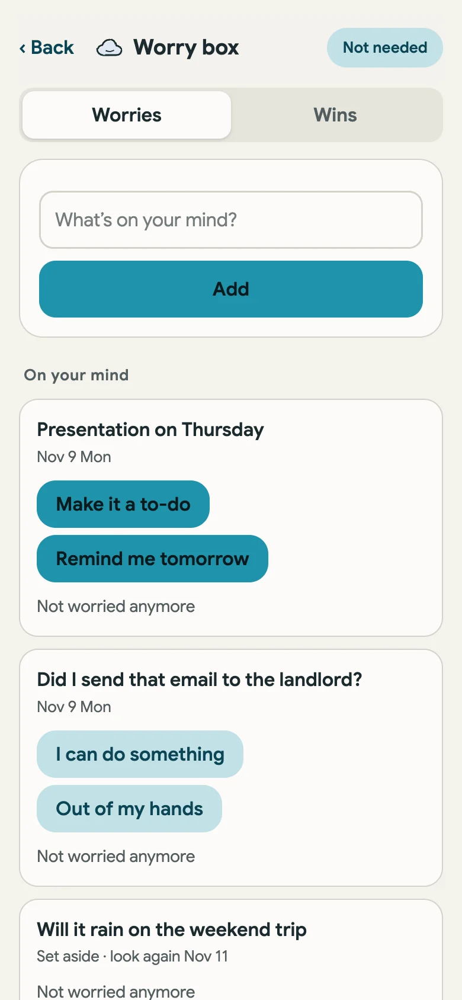
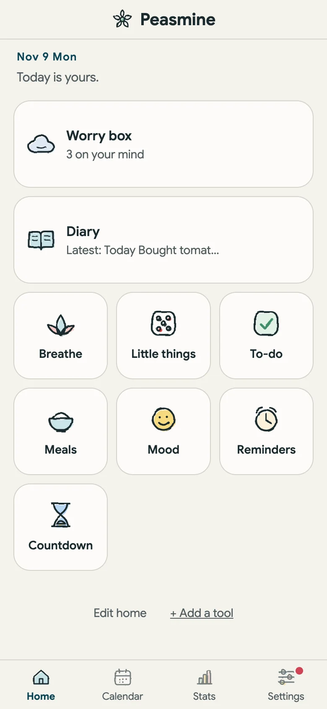
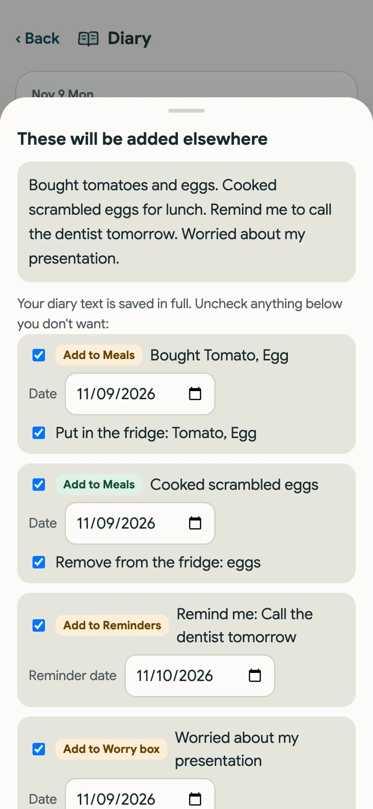
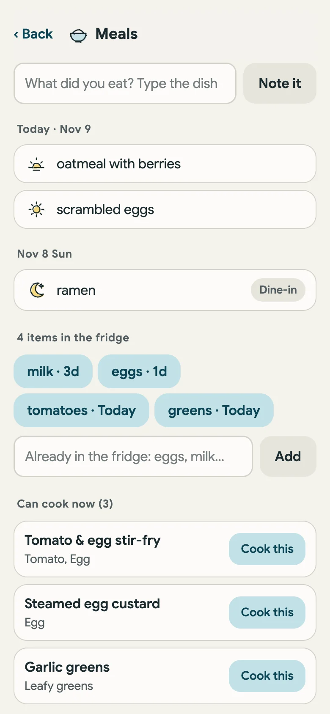
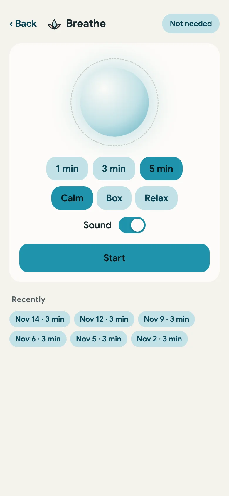
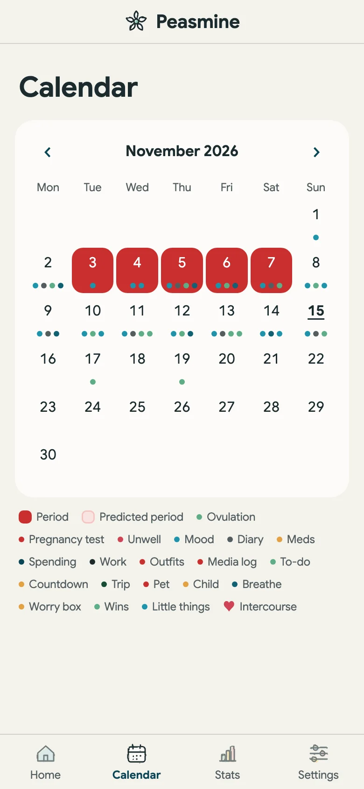
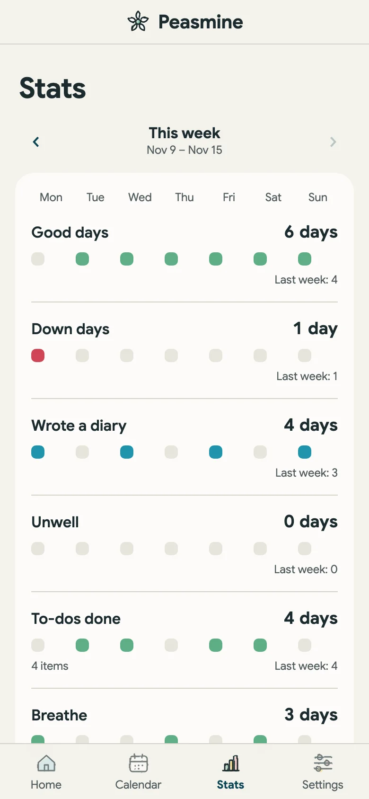

The little things on your mind
Put a worry in the box, then decide if you can do something about it. Turn it into a to-do, or set it aside and look again in a couple of days.
Your thoughts, plans, and everyday moments, all connected.

Write the way you would talk. When you want, Save and sort spots the groceries, meals, reminders and worries in your note and offers to file each one where it belongs. You choose what to keep. Otherwise it stays a plain diary entry.


Put a worry in the box, then decide if you can do something about it. Turn it into a to-do, or set it aside and look again in a couple of days.

Keep a light record of meals, see what is in the fridge, and find something to cook with it. Pets, kids, shopping and trips have their own small corners too.

One to five minutes of slow breathing with a soft sound. When you are stuck, draw one little thing to do: drink some water, open a window, stretch.
Calendar puts everything you recorded on the day it happened. Stats shows how the week went: good days, diary days, to-dos finished, moments to breathe. They only read what you have already written, and never ask you to add more.


Your notes stay on your device by default. You never need to sign up to use Peasmine, and your records are yours to export. This page counts visits anonymously; the app itself has no tracking.
Open PeasminePeasmine began as a place for all the little pieces of a life: the plans, the worries, the meals, the pets. Having somewhere for them brings a little more peace. It is here when you need it, and quiet when you do not.